Infernumb: Gameplay & design wiki
Overview
Infernumb is a tactical, turn-based experience: you spend action points (AP) each player activation to move, attack, or guard. Enemies act in a fixed alternating sequence with the player. Clearing rooms advances dialogue and rewards before the next combat space.
At a glance (GDD): turn-based action · 2D top-down · grid-based map exploration · single-player · keyboard-first controls (mouse used on the tactical grid).
This page merges Infernumb M6 implementation-accurate mechanics with Infernumb_GDD.pdf (Death’s Refrain design bible). Where the PDF and the shipped build differ, the mechanics sections below reflect M6.
Art below is bundled in this wiki’s images folder so the page opens cleanly on its own.
Inspirations & references
Formal bibliography-style citations are usually not required for a “games that inspired us” list in a design wiki, unless your course rubric says otherwise. Still, a short list with official or primary links is worth adding: it gives credit, helps readers understand your references, and makes it clear Infernumb is an original project drawing on public influences only.
- Hades (Supergiant Games): narrative pacing, run structure, tone
- Into the Breach (Subset Games): grid tactics, readable turns, telegraphed enemy intent
- Mewgenics : turn-based tactical combat on a grid, roguelite progression
- Warhammer 40,000: Rogue Trader (Owlcat Games): CRPG scope, party / build fantasy in a grim setting
- Warhammer 40,000: Kill Team (Games Workshop): small-model skirmish positioning and scenario play
- Halo: Flashpoint (Mantic Games): squad-scale skirmish tabletop pacing and objectives
Music direction
- Persona (Atlus): soundtrack energy, vocal hooks, battle themes as mood reference
- Guilty Gear (Arc System Works): high-intensity rock/metal score, character-driven musical identity
Character design
- Hollow Knight (Team Cherry): readable silhouettes, mood, and creature / hero design tone
Mechanics & audio inspiration: removed due to time constraints
These were discussed for mechanics, pacing, or music direction; they are not implemented in Infernumb M6.
- Metal: Hellsinger: rhythm-layered combat pacing (cut)
- Helltaker: tight grid-adjacent encounter puzzles / encounter framing (cut)
- Final Fantasy XIV : Ultima Thule (Endwalker) as a reference for music progression shifting as the player moves from zone to zone (cut)
Also named in Infernumb_GDD.pdf (references table): Hades : underworld setting, room-by-room progression, dialogue between runs, enemy variety.
Replace or extend this list to match what your team actually discussed in design reviews. If a link goes stale, swap in the publisher’s current product page or store listing.
Design bible (GDD)
Source: Infernumb_GDD.pdf: Death’s Refrain game design document (21-page design bible). Keep the PDF beside this HTML. Infernumb is the team / shipping name; mechanics sections target build Infernumb M6.
Introduction
Death’s Refrain is a top-down, turn-based 2D action game built around tight, room-clearing combat and a narrative-driven progression loop. The player fights through procedurally structured environments, eliminating enemies room by room using a turn-based combat system that rewards positioning and strategic decision-making.
The game was prototyped in Unity, built in a custom engine, and targets Windows.
Game story (pitch)
The protagonist is a soul descending through a fractured underworld, each layer a graveyard of civilization’s mistakes, haunted by the dead who still cannot let go. She is not only passing through: every soul she meets is trapped in the echoes of their choices, and you must judge them.
Condemn them, and she absorbs their power; the underworld bends to her will. Spare them all, and something stranger happens: a truth buried deeper than death itself begins to surface. The question is not whether she can survive the descent, but what kind of person she will be when she reaches the bottom.
Core pillars (GDD)
- Turn-based action
- 2D top-down perspective
- Grid-based map exploration
- Single player
- Keyboard controls
GDD action costs (reference)
Same values as the mechanics section; repeated here for design-doc parity.
| Action | AP cost |
|---|---|
| Move (per tile) | 1 AP |
| Melee attack | 1 AP |
| Ranged attack | 2 AP |
| Shield | 1 AP |
The PDF’s table of contents also references Resources & more (inspiration, game audio, and other notes). Those pages were not fully reproduced here: keep Infernumb_GDD.pdf alongside this wiki for any sections not inlined.
Game loop & goals (GDD)
From the design bible; room flow in the current build is detailed under Rooms & progression (dialogue → reward light → next room).
High-level loop
Every level asks the player to clear all enemies and reach the next space. How she gets there is up to her.
- Choose where to move on the grid
- Attack enemies when the opportunity arises
- Clear all enemies in the room / level beat
- Find the portal / exit to advance (GDD wording); the build uses the mysterious light after dialogue
- Avoid hazards along the way
- Collect power-ups when safe: they stack and matter in harder rooms
Enemies hit back on their turns; some can regain HP or refuse to stay down (e.g. Slimes respawn indefinitely). Sloppy fights drag and get punishing fast if you ignore priority targets.
A harder level might require farming power-ups before a fight; an easier one can be blitzed.
Winning condition
Clear every enemy standing in the Wanderer’s path without dying. Each space is packed with hazards, traps, obstacles, and enemies. Combat is turn-based: the player acts in activations with a pool of AP (see Action points) to spend on a single movement (once per activation) and attacks until AP is exhausted or the player ends the turn.
Enemies hit back with their own patterns; some threats regenerate or otherwise prolong fights if handled sloppily (e.g. Slime respawn). Prioritisation matters.
Power-ups are placed across levels; detours to grab them when safe are worthwhile. Ultimate victory: defeat enemies across all levels, reach the final floor alive, and clear each stage’s exit condition (room clear + progression gate in the shipped game).
Turn order
The game uses a scripted action sequence that alternates the player with each enemy in order. With two enemies, the pattern is:
Player → Enemy 1 → Player → Enemy 2 → Player → Enemy 1 → Player → Enemy 2 → …
With more enemies, the same idea continues: the player alternates with each enemy in rotation for that stage.
Enemy activation order
When multiple enemies are alive in a room, they activate in a fixed priority order (lower number = activates sooner):
| Enemy | Priority |
|---|---|
| Scorpion | 40: first |
| Slime | 45 |
| Tome | 50 |
| Lich | 60: last |
Action points (AP)
| Topic | Detail |
|---|---|
| Pool size | 8 AP per player activation |
| Display | Shown at the top of the screen |
| Available moves | Click the player to see what you can do with your remaining AP |
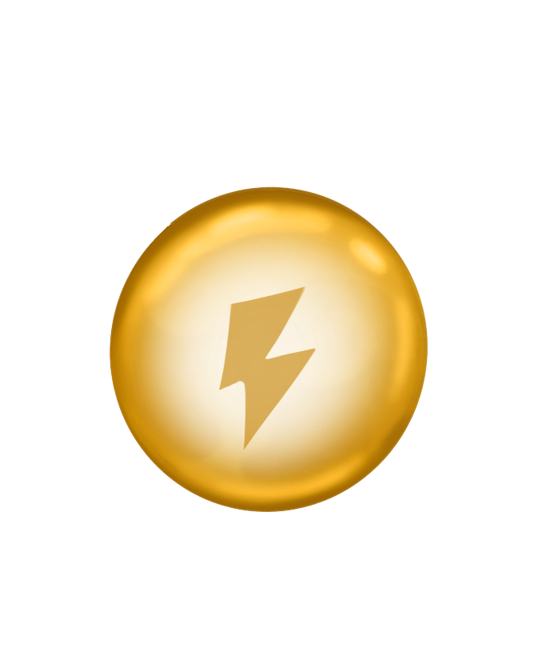
Ending your turn
| Input | Effect |
|---|---|
| T | End the current player activation |
| Hourglass (UI) | Bottom-right of the screen: same as ending turn |
Movement
| Topic | Detail |
|---|---|
| Select destination | Click the tile you want to move to |
| Once per turn | You can only move once per turn: after committing a move you cannot move again that activation |
| Validity | Only if reachable within remaining AP |
| Path preview | A highlighted path appears for valid targets |
| Confirm move | Click the same tile again to queue the move |
| Cost | 1 AP per tile entered |
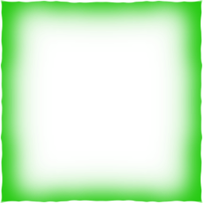
Attack mode
| Topic | Detail |
|---|---|
| Enter attack mode | Press Space |
| Line of sight | While in attack mode, line of sight to each enemy is shown |
| Valid target | Green line to the enemy |
| Invalid target | Red line to the enemy |
| What affects validity | Current attack type (melee vs ranged), plus obstacles such as rocks and walls |
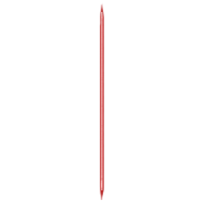
Melee & ranged
| Topic | Detail |
|---|---|
| Switch attack | Q toggles melee and ranged |
| Execute attack | In attack mode, click a valid enemy |
| Melee AP cost | 1 AP |
| Ranged AP cost | 2 AP |
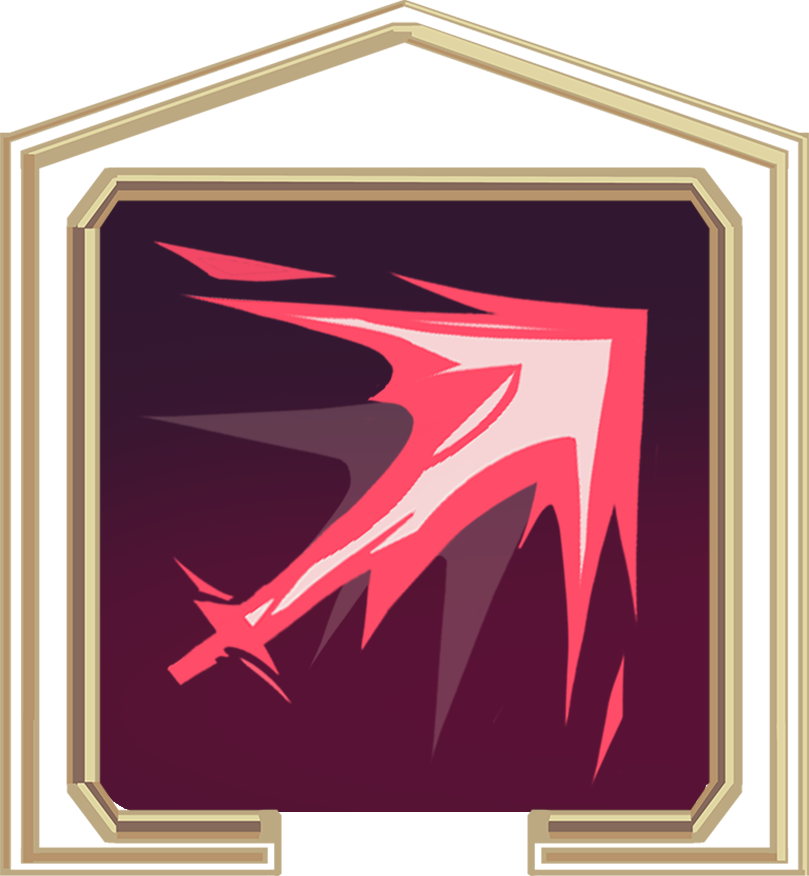
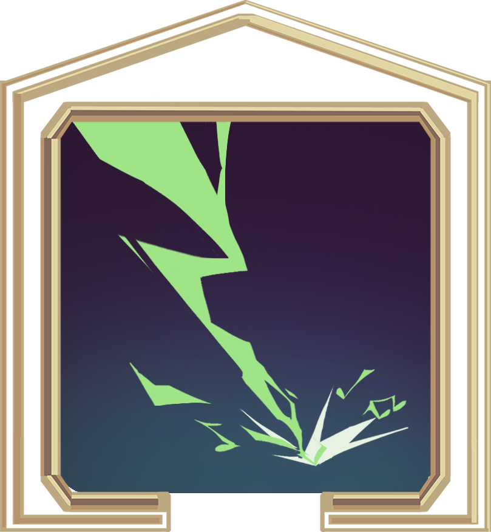
Shield
| Topic | Detail |
|---|---|
| Activate | Press G |
| AP cost | 1 AP |
| Cooldown | 1 turn: you cannot use the shield on two consecutive turns |
| Movement | Shield deactivates if you move while it is active; to keep it, do not move after activating |
| When hit | The shield negates one hit, then deactivates |
| Next player turn | If the shield is still up when your next player activation begins (you did not move and were not hit), it deactivates then |
Enemies
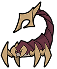
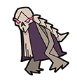
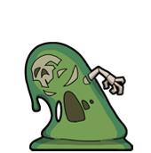
Scorpion
- Melee-focused; uses A* pathfinding to chase the player
- Moves one tile per activation toward the player
- Attacks when cardinally adjacent; attack has a 2.5 second cooldown
- Drops +10 souls on death
Tome
- Ranged sentry: does not move
- Fires a projectile each turn if it has straight line of sight to the player
- Unlimited range; projectile has a 3.5 second cooldown
- Drops +15 souls on death
Slime
- Can use both ranged and melee attacks
- Melee: 2.5 s cooldown | Ranged spike: 3.5 s cooldown, deals 1 damage
- Respawns indefinitely: no cap on respawn count
Respawn cycle
- Slime HP drops to 1 (it cannot fully die in normal flow)
- Enters dormant state: awards +10 souls immediately
- On its next turn, the slime skips the turn (pauses for ~2 seconds)
- On the turn after that, it plays its death animation in reverse
- Fully heals to max HP and returns to active AI: chasing the player again
Slimes are never permanently removed from the map. To unlock a portal, the player must kill all Scorpions and Tomes. Slimes do not block portal unlock and can remain dormant or active.
Boss: Lich
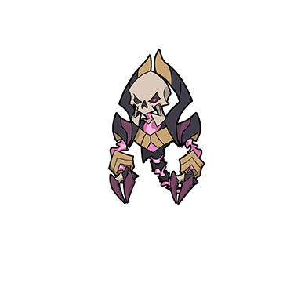
The Lich has two phases and two attacks, with a cooldown of 4 seconds between attacks:
| Phase | Trigger | Behavior |
|---|---|---|
| Phase 1 | Start of fight | Moves to align on the same row as the player, then fires Beam |
| Phase 2 | HP drops to threshold | Switches to chasing the player and using Smash when adjacent |
| Attack | Type | Description | Cooldown |
|---|---|---|---|
| Beam | Ranged | Fires a beam horizontally up to 13 tiles in the direction the Lich faces | 4 s |
| Smash | Melee AoE | Hits all cardinally adjacent tiles around the Lich | 4 s |
Drops +50 souls on death.
Boss room (L1 Room 5)
The Lich encountered in L1 Room 5 is a weakened variant with different stats than the full Lich profile. It shares the room with 2 Scorpions and 1 Tome. Boss music plays for this room.
| Stat | Full Lich profile | L1 Room 5 Lich |
|---|---|---|
| HP | 10 | 4 |
| AP | 3 | 3 |
| Beam range | 13 tiles | 5 tiles |
| Attack cooldown | 4 s | 2 s |
Rooms & progression
- Clear the room of threats.
- Dialogue plays, showing the conflict between two characters that created that room.
- After dialogue, enter the mysterious light.
- Choose either full heal or a permanent power-up (one option per stop).
- After choosing, proceed to the next room.
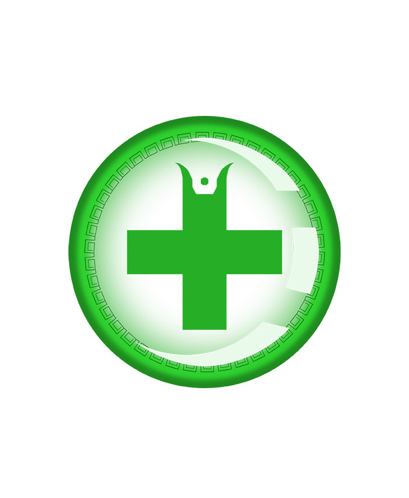
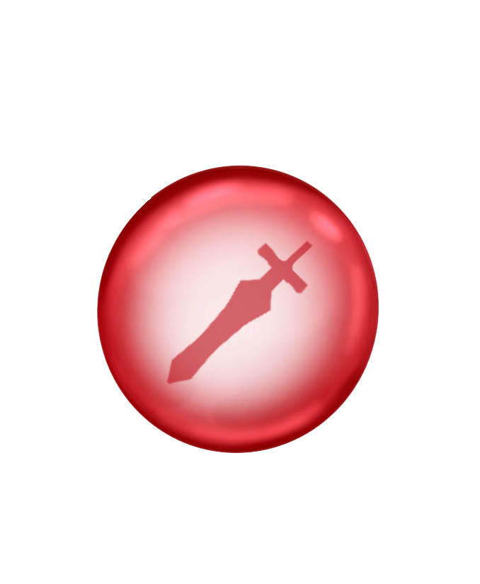
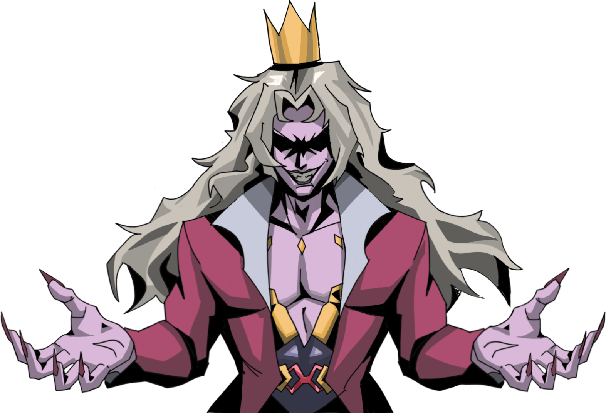
Narrative & themes (GDD)
The Wanderer descends through a layered underworld where each domain embodies fragments of civilization’s downfall. These places are shaped not only by ruins but by souls still bound within them, caught in endless dialogue over their choices in life.
In each layer, the Wanderer does not merely listen but must pass judgment. To condemn a denizen is to gain their power, bending the underworld toward survival. To spare all and walk a path of empathy is to approach a truth that can unmake death itself.
| Story axis | Notes (GDD) |
|---|---|
| Setting | Underworld (Hell); Egyptian, Greek, and Roman cultural echoes |
| Themes | Judgment & morality, condemnation, dialogue between extremes |
Narrative layers in Infernumb_GDD.pdf: Layer 1 is Bibliotaphos (Bruno & Belac), which aligns with the L1 combat rooms you play first. Layer 2 is Bellatoris Runiara (Alaric & Farin), which aligns with L2 rooms. The level-progression table’s “Layer 1 / Layer 2” column is the same map progression.
Layer 1: Bibliotaphos: The Tomb of Books
The Wanderer steps into a drowned library beneath a black sun, where ink bleeds and silence smothers. Here walk Bruno and Belac, two intellectuals once loved for their brilliance but damned for how they faced rejection.
Bruno, the scholar and teacher, was ridiculed and condemned for forbidden love, yet he still carried warmth and compassion despite the world’s cruelty. Belac, the physician, was discredited for mistakes and later paralyzed by fear of judgment. He withheld his knowledge in the hour of need, and countless lives were lost.
Though both were once respected, their falls diverged: Bruno resisted bitterness and remained steadfast in empathy, while Belac withdrew, condemning himself in silence. Now they clash endlessly, each believing the other’s reaction to ridicule was cowardice.
The Wanderer again faces judgment: condemn one and claim their knowledge, or leave both to their unending dispute.
Layer 2: Bellatoris Runiara: The Endless War of Ruin
The shattered capital burns with the embers of civil strife. Ruined walls echo with chants for justice, order, and revolt: none answered, none silenced. Within this city, the Wanderer finds two souls forever bound by their past:
Alaric, the warrior-commander, was tasked in life with putting down riots in the name of order. He sought to protect his people, yet his campaigns left blood on the cobblestones. Like Luthen Rael, his vision was burdened by necessity: sacrifice for stability, ruin for salvation.
Farin, the scholar-magistrate, incited unrest, believing that only through turmoil could a better world emerge. He preached ideals, proud and unyielding, knowing lives would be lost in pursuit of the greater good.
In life they opposed one another: Farin’s fire fueling rebellion, Alaric’s duty forcing his hand against the very people he sought to protect. In death their quarrel continues: Alaric laments unintended suffering, while Farin justifies it as noble sacrifice.
The Wanderer must choose: condemn one and take their strength, or let the debate stand unresolved.
Condemnation & endings (cut content due to time constraint)
Mechanic of condemnation
At the end of each layer, the Wanderer may condemn one denizen, taking a fragment of their essence. This grants power: for example Alaric’s strength as vitality, Farin’s cunning as perception, Bruno’s wisdom as resistance to despair, or Belac’s knowledge as new tools against corruption. These choices stain the soul; wielding that strength means inheriting the weight of their damnation.
Withholding judgment (true ending path)
If the Wanderer refuses to condemn any soul throughout the descent, then at the journey’s end a hidden path opens. Empathy allows her to merge with the Death Singer, regaining her full strength not by power seized, but by understanding the condemned. This path reveals the true ending, in which death itself is rewritten through compassion.
Tie-in to build: room rewards that offer heal vs permanent power-up echo the GDD’s moral economy; align final narrative beats with whatever your submitted build implements.
Level design (overview)
High-level flow is room-based: combat arenas tie into narrative dialogue, then a reward gate before the next space.
Infernumb_GDD.pdf describes the campaign as eight rooms spanning a tutorial, two level bands, and a boss encounter, with difficulty rising as the Wanderer descends. The table below matches Infernumb M6 room content and rewards.
Room progression order
| # | Room | Layer | Notes |
|---|---|---|---|
| Tutorial | 1 tutorial NPC (non-hostile); teaches movement, attack, shield, souls | ||
| 1 | L1 Room 1 | Layer 1 | 2× Scorpion, 3 traps; reward: +1 Strength |
| 2 | L1 Room 2 | Layer 1 | 3× Tome; 1× AP pickup; reward: +1 Defense |
| 3 | L1 Room 3 | Layer 1 | 3× Scorpion, 1× Tome, 3 traps; 1× AP + 1× Heal pickup; reward: +1 Defense |
| 4 | L1 Room 4 | Layer 1 | 1× Scorpion, 1× Tome, 3 traps; 1× AP + 1× Heal + 1× Buff pickup; reward: +1 Strength |
| 5 | L1 Room 5 | Layer 1: Boss | 2× Scorpion, 1× Tome, Lich (HP 4); 3 traps; pickups; boss music; no reward choice |
| 6 | L2 Room 1 | Layer 2 | 3× Scorpion, 4× Tome, 1× Slime, 3 traps; 1× Buff + 3× AP + 3× Heal pickup; reward: +1 Strength |
| 7 | L2 Room 2 | Layer 2 (end) | 2× Scorpion, 2× Tome, 2× Slime; reward: +1 Defense |
Tutorial → L1R1 → L1R2 → L1R3 → L1R4 → L1R5 → L2R1 → L2R2 → Ending
Maps
Planning maps from production assets:
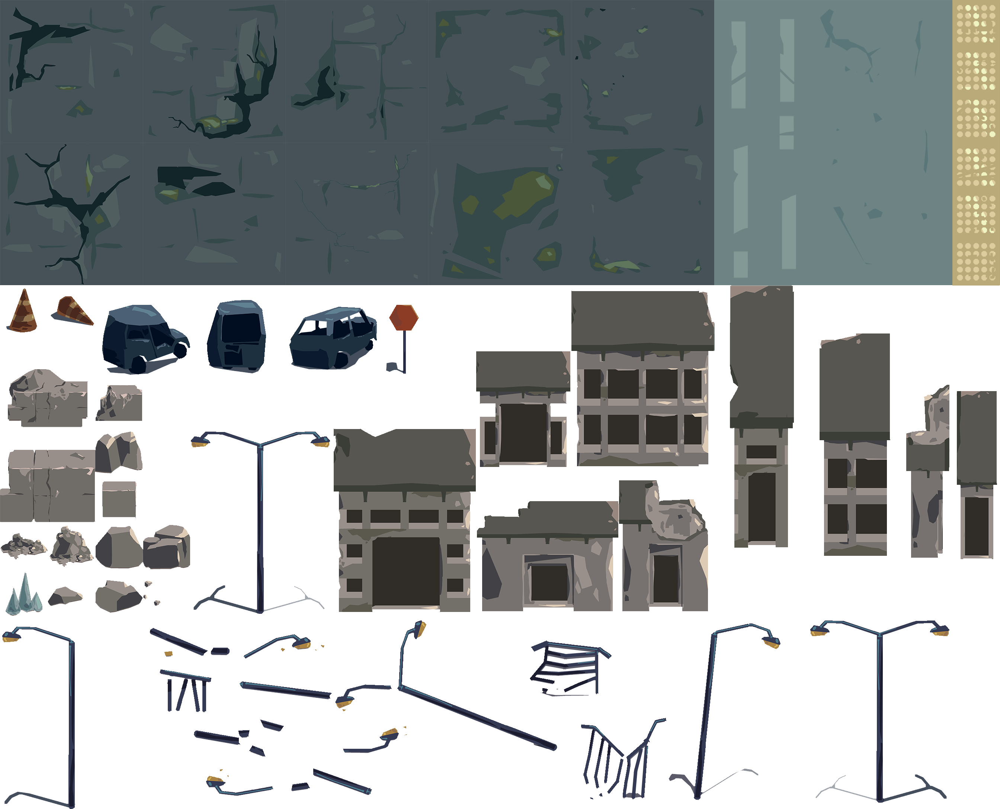
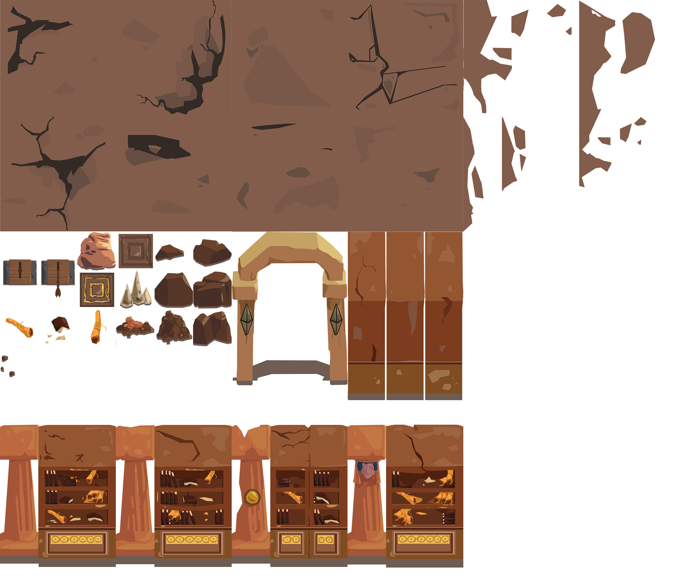
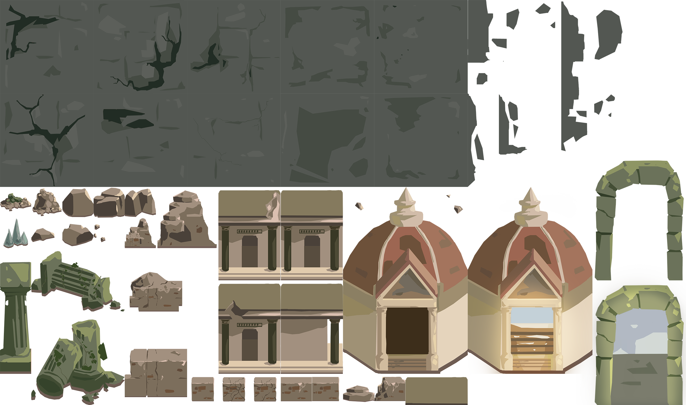
Start flow & main menu
Selecting Play from the main menu starts the game at Tutorial_New.yaml. The main menu also includes a How to Play overlay and a Quit confirm flow.
| Main menu option | Behavior |
|---|---|
| Play | Starts the tutorial |
| How to Play | Opens an in-game help / keybind overlay; can be closed with ESC or the back button |
| Quit | Opens a confirmation box before leaving the game |
Note: The normal shipped flow does not skip straight to Level 1 from the main menu. Play always opens the tutorial first.
Tutorial
The game opens with a dedicated tutorial room. In the shipped menu flow, pressing Play always opens the tutorial first. A narrator (Lucifer) teaches the following topics in order:
| Topic | What you learn |
|---|---|
| Movement | Click yourself, then click a highlighted tile to preview, click again to confirm. You can only move once per turn. Press T to skip your turn. |
| Attack | Press Q to swap weapon mode; press Space to enter combat. Click a valid (highlighted) target to attack. Turns go: player acts, then enemies act. |
| Weapon mode | Shows the weapon holder UI and attack readout. Q swaps between modes when more than one is available. |
| Clearing rooms | Rooms are cleared by killing all Scorpions and Tomes. Slimes do not prevent portal unlock. |
| Shield | Press G to guard against attacks for the next turn. Good defense lets you survive longer and set up counter-attacks. |
| Souls & special tiles | Right-click yourself to view your profile sheet. Pick up orbs to restore or boost stats. Watch for fire and other special tiles: they affect movement and positioning. |
Hazards & traps
Rooms contain environmental dangers beyond enemies.
| Hazard | Effect | Active in game? |
|---|---|---|
| Trap / Spike | Deal 1 damage when triggered. L1R1 has 3; L1R3 has 3; L1R4 has 3; L1R5 has 3; L2R1 has 3. | Yes: in all combat rooms |
| Fire (VFX) | Deals 1 damage per round to any unit on the tile. Detected from fire VFX objects, not a tile ID. | Yes: decorative fire in rooms |
| Slow tile (ID 17) | Moving into costs 2 AP per tile instead of 1, for both player and enemies. | Yes: tile ID 17 on maps |
| Lava | Instant kill for player; 999 damage to enemies. | Coded; no current map deploys it |
| Poison tile | 1 damage per step taken on tile. | Coded; no current map deploys it |
| Boon tile | Grants +1 AP and +5 souls once per round while standing on it. | Coded; no current map deploys it |
Invulnerability after damage: After taking a hit, the player gains 1.5 seconds of invulnerability. Hits during this window cancel the i-frames but deal no damage.
Controls reference
| Input | Action |
|---|---|
| Left click (player) | Select the Wanderer; reveals move range and available actions |
| Left click (tile) | Preview path to tile; click again to confirm and queue move |
| Left click (enemy in attack mode) | Attack a valid highlighted target |
| Right click | Open context menu on player or enemy: shows HP, AP, STR, DEF stats. Also cancels attack selection |
| Space | Enter attack targeting mode |
| Q | Toggle between Melee and Ranged attack |
| G | Activate Shield (brace) |
| T | End turn |
| ESC | Cancel current selection. If nothing is selected, opens or navigates pause / overlay menus |
| W A S D | Pan camera freely during player turn |
Pause menu
Press ESC or click the pause button to open the pause menu. Options: Resume, Sound (SFX & music volume sliders), Controls, Retry (restart current room), Main Menu.
Mission & objective systems
Some rooms support alternate victory conditions beyond simply defeating every enemy. These systems are tracked in the HUD and can resolve a room even while enemies remain alive.
Objective actions
- Stand adjacent to an objective node
- Press E to secure it
- Each secure action costs 2 AP
- Completing all required objective actions resolves the room as objective
Zone control
- If the player stands alone on a control zone, the player score increases by +1 that round
- If enemies stand alone on the zone, the enemy score increases by +1
- The default target score is 2
- If no side makes progress for 2 rounds, the zone target drops by 1 (anti-stall rule)
Mission outcomes
| Outcome | Result |
|---|---|
objective | Portal may unlock without killing every enemy |
zone_player | Player wins the zone mission; portal may unlock |
zone_enemy | Immediate loss; sends player to the death screen |
HUD & feedback
| UI element | What it shows |
|---|---|
| AP line | PLAYER AP, ENEMY AP, or FOCUS AP depending on phase |
| Status line | Control hints, BRACE, BRACE CD, temp STR / DEF buffs |
| Mission line | OBJ x/y | ZONE a:b, and RESULT ... when resolved |
| Enemy intent line | INTENT text during enemy turn and camera focus |
| Room-clear overlay | Animated win-screen banner when a portal unlocks |
The room-clear overlay plays forward, holds briefly, then plays in reverse before disappearing.
Stats & damage
Player base stats
| Stat | Value |
|---|---|
| Max HP | 10 |
| Max AP | 8 |
| Strength | 4 |
| Defense | 2 |
Enemy base stats
| Enemy | HP | AP | Strength | Defense |
|---|---|---|---|---|
| Scorpion | 4 | 5 | 4 | 2 |
| Tome | 4 | 1 | 5 | 1 |
| Slime | 4 | 5 | 4 | 2 |
| Lich | 10 | 3 | 4 | 3 |
Damage formula
All combat (player attacking enemy, enemy attacking player, traps) uses:
Damage = max(1, Attacker Strength − Defender Defense)
The minimum is always 1: attacks never deal zero damage. Using default stats:
| Attacker | Target | Damage dealt |
|---|---|---|
| Player (STR 4) | Scorpion (DEF 2) | 2 |
| Player (STR 4) | Tome (DEF 1) | 3 |
| Player (STR 4) | Slime (DEF 2) | 2 |
| Player (STR 4) | Lich (DEF 3) | 1 |
| Scorpion (STR 4) | Player (DEF 2) | 2 |
| Tome (STR 5) | Player (DEF 2) | 3 (projectile overrides to 1) |
| Trap | Player | 1 (trap STR treated as 1) |
Note: Ranged attack does no knockback. Melee knockback is 2 tiles by default. Player knockback when hit is 1 tile.
Win & fail conditions
Infernumb_GDD.pdf frames the campaign goal as defeating enemies across all levels and reaching the final floor alive. In M6, room clears, portal unlock, slime exceptions, and mission shortcuts follow the rules below and under Rooms & progression.
Winning a room
The usual path is to defeat all enemies in the room. Once the last required enemy falls the portal unlocks (door blocker disappears and the room-clear animation plays). You must also have claimed the reward from the light before the portal will let you through.
Some rooms can also unlock via mission victory: completing the room objective or winning the zone system can open the portal even if enemies remain alive.
Winning the game
Clear every room across both levels and exit through the final portal. The game ends with an ending cutscene.
Death
The Wanderer's HP reaching 0 triggers the death animation and transitions to the death screen. From there you can retry or return to the main menu.
Souls
Souls are a currency earned by defeating enemies. Your current soul count is visible on the right-click profile sheet. Boon tiles on the map also grant souls.
| Source | Souls gained |
|---|---|
| Kill Scorpion | +10 |
| Kill Tome | +15 |
| Kill Lich | +50 |
Floor pickups
Some rooms have floor pickups placed on the map: separate from the post-room reward light. Step on them during your turn to collect.
Infernumb_GDD.pdf describes the buff pickup as boosting damage for the rest of the run. Infernumb M6 implements the ATK orb as temporary (+1 Strength until your next attack): see the table below.
| Pickup | Effect | Notes |
|---|---|---|
| Heal orb | Restore +2 HP | Single use; only works if not at full HP |
| ATK orb | +1 Strength until next attack | Temporary: consumed on next attack |
| AP orb | +1 AP to current pool | Only if not already at max AP |
Room rewards
After clearing each room and completing the dialogue, enter the mysterious light to choose between a full heal (restore HP to max) or the room's permanent stat upgrade. The upgrade varies per room:
Infernumb_GDD.pdf labels the light’s options as Healing power-up (full heal), Attack power-up (+Strength), and Defense power-up (+Defense), depending on the room’s scripted reward.
| Room | Permanent upgrade option |
|---|---|
| Tutorial | No reward choice |
| Layer 1 room 1 | +1 Strength |
| Layer 1 room 2 | +1 Defense |
| Layer 1 room 3 | +1 Defense |
| Layer 1 room 4 | +1 Strength |
| Layer 2 room 1 | +1 Strength |
| Layer 2 room 2 | +1 Defense |
| Boss room | No reward choice: portal and reward node share the same tile; node auto-completes |
Upgrades are permanent and carry through to subsequent rooms. Press Y for full heal or N for the stat upgrade (also clickable).
System nesting
How major systems stack:
Round / activation order
└── Player activation (8 AP)
├── Movement (once per turn; 1 AP per tile; preview path → confirm same tile)
├── End turn (T or hourglass)
├── Attack mode (Space)
│ ├── Attack type (Q: melee 1 AP / ranged 2 AP)
│ └── Target validity (attack rules + line of sight + obstacles)
└── Shield (G, 1 AP, cooldown; ends on move / hit / next-turn rule)
└── Enemy activations (per-enemy behavior: scorpion, tome, slime, lich, …)
Changelog
Course wiki format (e.g. 2101): each row is a lookup for date,
operator, and what changed. Newest revision first.
Update the header summary when you add a row. Tabular mechanics and room data live
in HTML tables here; attach a separate .xlsx only if your instructor asks for Excel in addition.
| Date | Operator | Change |
|---|---|---|
| 2026-04-05 | Lin Xin |
Synced with Infernumb_GDD.pdf + build label
Infernumb M6: PDF copied beside wiki; all cites point to new filename; narrative
Layer 1 = Bibliotaphos, Layer 2 = Bellatoris per GDD; added
PDF-only notes (8-room summary, win framing, reward naming, buff run vs M6, enemy pressure, Hades ref row).
Earlier: rubric header/changelog operator column, validation, edit/export, duplicate start-flow
removed, pickups images, sidebar order.
|
| 2026-04-04 | Lin Xin | Initial HTML wiki + search |
| 2026-04-04 | Lin Xin | Added wiki/images/ copies of game PNGs; figures for UI, enemies, rewards, and level maps |
| 2026-04-04 | Lin Xin | Renamed wiki files greenhighlight.png, greenline.png, redline.png; captions use assets/… paths (no old folder naming in text) |
| 2026-04-04 | Lin Xin | Integrated GDD PDF (Death’s Refrain): design bible, loop/goals, narrative layers, condemnation; cross-linked with mechanics |
| 2026-04-04 | Lin Xin | pickup-heal.png = first frame of Health VFX strip; enemy-slime.png = first frame of slime_idle_1r4c_128x128px |
| 2026-04-04 | Lin Xin | Lich art: first frame of idle sheet; stripped file-path text from figure captions |
| 2026-04-04 | Lin Xin | Narrative note (superseded 2026-04-05): wiki briefly used inverted layer labels; Infernumb_GDD.pdf and M6 wiki now use Layer 1 = Bibliotaphos, Layer 2 = Bellatoris |
| 2026-04-04 | Lin Xin | Added: Controls, Stats & damage, Win/fail, Souls, Floor pickups, Room rewards. Fixed: Scorpion/Tome/Lich accuracy; movement once-per-turn |
| 2026-04-04 | Lin Xin | Full room composition table (all rooms); slime respawn cycle detail; L1R5 boss room + weakened Lich stats; hazards table corrected (deployed vs coded-only) |
| 2026-04-04 | Lin Xin | Added: Tutorial overview, Hazards & traps, room progression order table, enemy activation priority order |
| 2026-04-04 | Lin Xin | Added: Start flow & main menu, mission/objective/zone systems, HUD notes; corrected win-condition and ESC wording to match implementation |